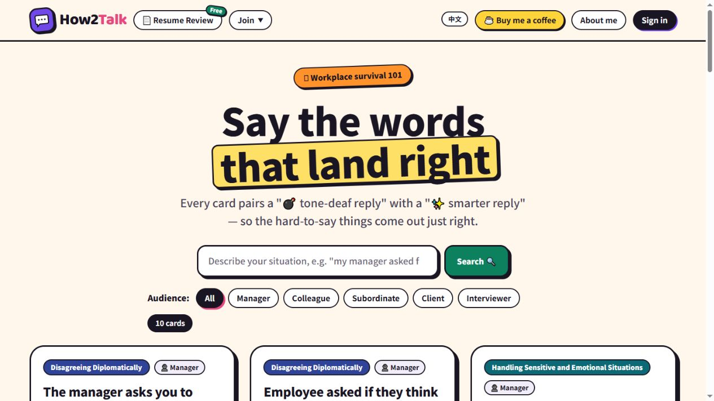

How2Talk
Workplace communication and resume review
Practice difficult workplace conversations with scenario cards that pair a tone-deaf reply with a more thoughtful alternative, and review your resume.
My implementation Full-stack development with Google sign-in, an admin dashboard, user management, idempotent database operations, and race-condition handling.
Visit website